Iwakuni
Iwakuni · Yamaguchi
Iwakuni
Highlighted on the Yamaguchi map.
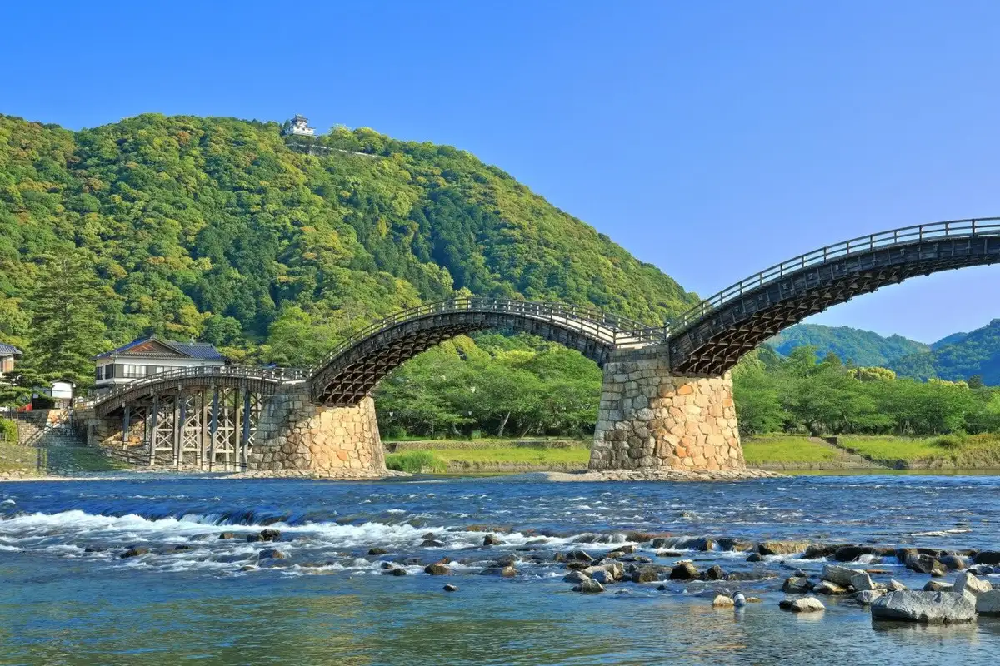
Sights
Uno Chiyo Seika
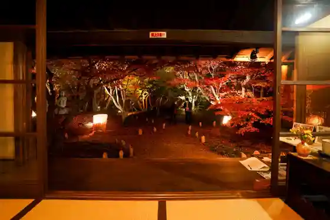
Kintai Hashi
Iwakuni Gakkokyoiku Museum (Kyu : Han Ritsu Iwakuni Gakko / Iwakuni Jinjo Shogakko)
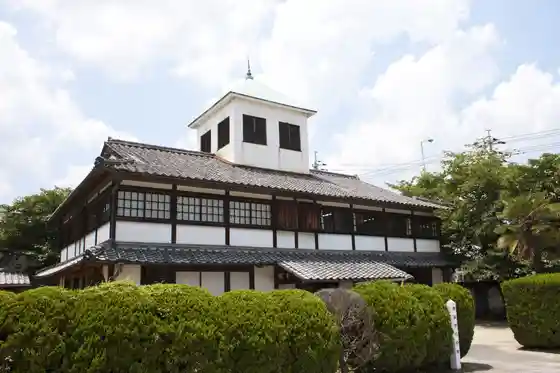
Boken Tema Park Chitei Okoku Mikawa Mubare
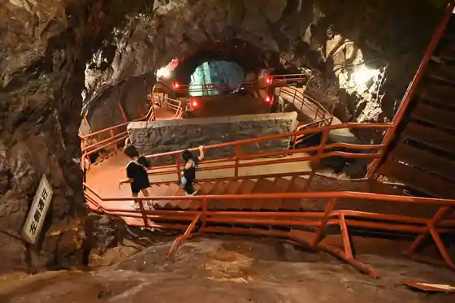
Kyoren Tera
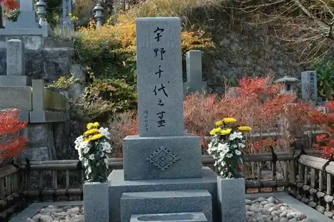
Iwakuni Shiro
Iwakuni Shirohebi Shrine
350 Nen no Hashi Wo Mamoru (Hashimori) Gago Annai Kintai Hashi no Miryoku no Shinso Ni Fureru Gentei Gaido Tour
Kintai Hashi Raitoappu
Iwakuni Shiro Ropue
Tokotoko Torein
Aki no Yuransen (Momiji Fune)
Kikko Park
Autumn Leaves Tani Park
Nazeko no Hashi Ha Utsukushii no Ka ? 5 Fun no 1 Mokei Zukuri Taiken De Jikkan Suru Kintai Hashi no Kozo to Gijutsu
Iwakuni Shirohebi no Kan
Iwakuni Kanko Koryu Tokoro (Honke Matsu Gane)
Kintai Hashi Haru no Yuransen (Sakura Fune)
So Tsu Kyo Onsen (SOZU Onsen)
Kochi Zu Wo Katate Nimachiwo Aruko U (Iwakuni Hen)
Ninki Gakugeiingatsumugu Kintai Hashi to Iwakuni Castle Town no Monogatari
Jaku Chikyo
Oto Campground Sugawa Kazoku Village
Shiokaze Koen Minato Oashisu Yu
Kintai Hashi Onsen
Kintai Hashi Aki no Yuransen (Kissa Fune) (2025 Nendo Yori Unko Shiteorimasen)
Uno Chiyo Seika Autumn Leaves Raitoappu
Shirohebi Kanran Shisetsu
Roadside Station Pyua Line Nishiki
Fukaya Kyo Onsen Seiryu no Sato
Tenkoku Experience
Chikujo 400 Nen, Iwakuni Shiro no Iko Womeguru Kangahara Kara Soken, Ha Kyaku Made no Rekishi Ni Omoi Wo Hase Ru
Iwakuni Eki Tourist Information Basu Kippuriba Machiai Tokoro
Hashi no Eki Kintai Hashi
Sen Tsubo Yama
Kintai Hashi Shuhen Teiji Kosugaido
Yoshikawa Shiryo Kan
Kikko U Village
Yoshikawa Shiryo Kan Kinen Tokubetsuten
Sakin Sagashi Experience Hoseki Sagashi Experience
(Kashiwabara Art Museum) Mishuran no Hoshi Tsuki " Bushi Bunka no Art Museum " He Kanchogakataru, Bushi no Biishiki to Seishin Sei
Ni Shika
Kikko Jinja Honden Haiden Heiden Kodo Torii
Sakai Shuzo Art Museum Itsutsubashi Bunko
Rakan Kogen Oto Campground
Rakan Kogen Sukai Park
Kannon Suisha Dekamarukun
Fukaya Bridge
Fuku no Kuni Yamaguchi (Sachi Fuku) Joju no Tabi Fuku no Kuni De Omone Oshi (Sachi Fuku) O Shiro In O Jo In Wo Getto Shiyo
Kashiwabara Art Museum
Myojin Hara Nagomi Plaza
Kurakage Yama
Ippan Shadanhojin Iwakuni Tourism Association
Reiku Plaza Yasaka Iyasaka Mizumi
Hakusan Hime Shrine (Hakusan Shrine)
Jaku Jiyama
Usa Hachiman Shrine no Sugi Kyoju Gun
Iwakuni Choko Kan
Hora Izumi Tera
Kyu Mekada Ie House
Eiko Tera
Konuka Yo
Yoshida Shoin Bocho Michi Sekibetsu no Chi
Iwakuni Kanko Gaidoboranteia Kyokai
Kagawa Kacho Ya Mon
Hashira Shima Haji Shima Kuro Shima
Iwaya Kannon
Iyasaka Kyo
Kin'un Kaku
Kitani Kyo
Takamori Tenmangu Shrine
Yamaguchiken Yu Seishonen Nature no Ie (Yamaguchiken Fureai Park)
Iwaya Kannon Kutsu
Shiroyama Tozando
Shinfonia Iwakuni (Yamaguchiken Tami Bunka Horu Iwakuni)
Shuto Pasutoraruhoru
Shinrin Taiken Koryu Shisetsu Maruta Village
Magokoro Village
Daibai Yama Tsuka Tera
Iwakuni Nanjo Yo
Fukaya Kyo
Yu Onsen
Hongo Folk History Museum
Iwakuni Mikuro Seibutsu Kan
Taka Sho Terayama
Kiri Mine Shrine
Togamori
Ko Toge Kagura
Masaki Kan Fuzoku Ya Oyobi Mon
Yamashiro Shiraha Kagura
Renge Yama
Iwakuni Hanshu Yoshikawa Ie Hakasho
Yu Folk History Museum
Aka Ne Takehito Hakasho
Nakayama Mizumi
Kaminuma Ta Kagura
Shirataki Yama
Jaku Chi Kawa
Chu Kachi In
Ko Ryu Tera
Ayuhara Tsurugi Shrine
Sakaki Hachiman Shrine
Iwakuma Hachiman Shrine (Mokuzo Hengaku (Hachiman Shrine) Dokuritsusei Eki Fude)
Minami Kuwa Kajikagaeru Seisokuchi
Yama no Nai Kameyama Park
Togamori Tembo Park
Nagano Kagura Mai
Dokuritsu Ichi Shaku no Mizu
Nii Terayama Gokuraku Tera
Minamikawachi Ekishuhen no Na no Hanahata
Iwakuni Gyo Nami no Kamimai
Heikegagaku
Taka Sho Terayama Haikingukosu
Iwakuni Kinri Yama Gaido no Kai
Yamashiro Ko Toge Kagura
Bafungagaku
Yamashiro Shozo Segawa Kamishiro Kagura
Iwakuni Yakusho
Dining
すき焼き 匠
Suki Yaki Takumi
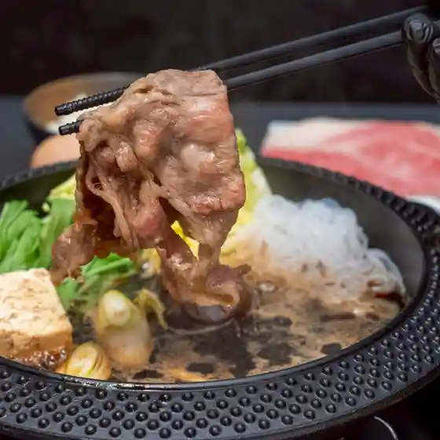
や台ずし 岩国駅前町
Ya Dai Zushi Iwakuni Ekimae Machi

よか鶏 岩国駅前店
Yoka Niwatori Iwakuni Ekimae Mise
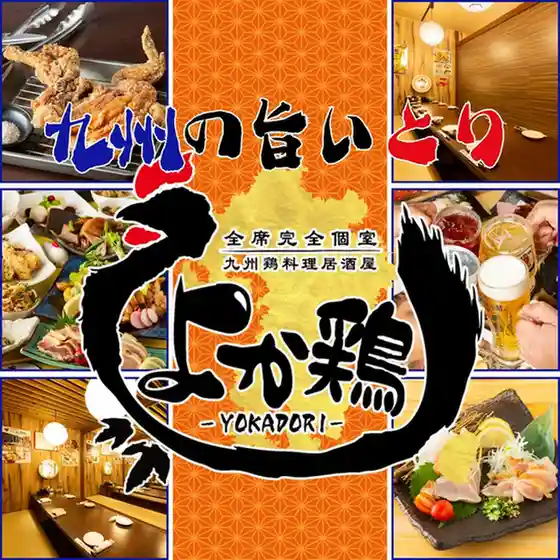
鶏と海鮮 個室居酒屋 鶏うお 岩国店
Niwatori To Kaisen Koshitsu Izakaya Niwatori Uo Iwakuni Mise
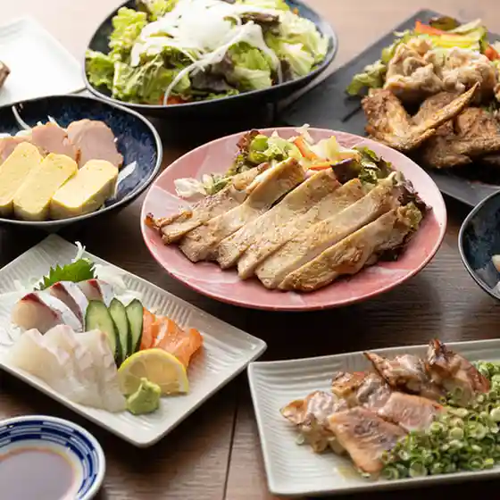
ひとくち餃子の頂 岩国駅前店
Hitokuchi Gyouza No Itadaki Iwakuni Ekimae Mise
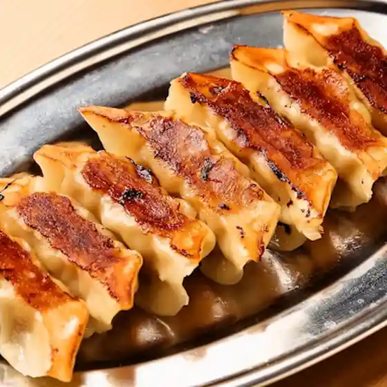
づぼら寿司
Zubora Sushi
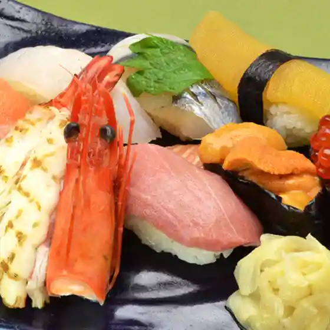
岩国縁家
Iwakuni Enka
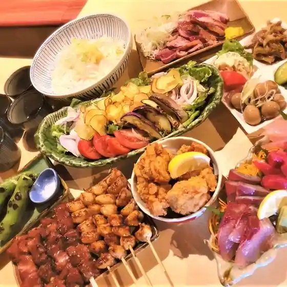
ESOLA 岩国駅前店
Esola Iwakuni Ekimae Mise
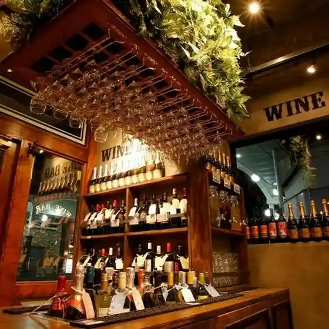
酒肴庵 岩国駅店
Shukou Iori Iwakuni Eki Mise
豊丸水産 岩国駅前店
Toyomaru Suisan Iwakuni Ekimae Mise
千年の宴 岩国駅前店
Sennen No Utage Iwakuni Ekimae Mise
福の花 岩国店
Fuku No Hana Iwakuni Mise
ガネーシュ 岩国店
Ganeeshu Iwakuni Mise
くいもの屋わん 岩国店
Kuimono Ya Wan Iwakuni Mise
目利きの銀次 岩国駅前店
Mekiki Kino Ginji Iwakuni Ekimae Mise
ガネーシュ デラックス 岩国店
Ganeeshu Derakkusu Iwakuni Mise
やきとり 大阪屋
Yakitori Oosaka Ya
牛角 岩国駅前店
Gyuukaku Iwakuni Ekimae Mise
長州名代 うなぎの錦
Choushuu Myoudai Unagino Nishiki
憂花
Yuga
懐石居酒屋 漁火
Kaiseki Izakaya Isaribi
パンサー
Pansaa
セブンイレブン おみやげ街道新岩国店
Sebun'Irebun Omiyage Kaidou Shingan Kuni Mise
四季音 岩国市役所内店
Shiki Oto Iwakuni Shiyakusho Uchimise
ほっともっと 南岩国店
Hottomotto Minami Iwakuni Mise
笹やん
Sasa Yan
あや乃
Aya No
来来亭 岩国店
Rairai Tei Iwakuni Mise
観音茶屋 自販機コーナー
Kannon Chaya Jihanki Koonaa
御飯屋 ゆき乃
Gohan Ya Yuki No
ポット・プーリー
Potto・Puurii
シャトレーゼ 南岩国店
Shatoreeze Minami Iwakuni Mise
串の坊
Kushi No Bou
本家松がね
Honke Matsu Gane
佐々木屋小次郎商店
Sasaki Ya Kojirou Shouten
ファミリーマート 岩国尾津店
Famiriimaato Iwakuni Ozu Mise
ホシノベーカリー 岩国店
Hoshinobeekarii Iwakuni Mise
暮らしの雑貨と喫茶 和白
Kurashi No Zakka To Kissa Wajiro
みっちゃん
Mitchan
食堂ゆっち
Shokudou Yutchi
御食事処 しらため別館
Mike Koto Tokoro Shiratame Bekkan
花園
Hanazono
sango CAFE
Sango Cafe
炭火焼肉ぶち 岩国店
Sumibi Yakiniku Buchi Iwakuni Mise
マナティー
Manateii
ばらの木
Barano Ki
Tetumaru
Tetumaru
どんどん カジル岩国店
Dondon Kajiru Iwakuni Mise
はしら島
Hashira Shima
トンキー
Tonkii
BAR VISIT
Bar Visit
イタリアン＆肉バル ルコワン
Itarian & Niku Baru Rukowan
台湾料理 福来順 周東店
Taiwan Ryouri Fukurai Jun Shuutou Mise
旬火柊澄
Jun Hi Hiiragi Sumi
ニコリ キッチン
Nikori Kitchin
○楽
○ Raku
筑豊ラーメン山小屋 玖珂店
Chikuhou Raamen Yamagoya Kuga Mise
cafe world 広瀬
Cafe World Hirose
マムアンカフェ
Mamuankafe
餃子の王将 岩国店
Gyouza No Oushou Iwakuni Mise
Irori Sanzoku Kuga Shop Iwakuni Yamaguchi Prefecture Chugoku
Irori Sanzoku Kuga Shop Iwakuni Yamaguchi Prefecture Chugoku
Irori Sanzoku Kuga Shop Iwakuni Yamaguchi Prefecture Chugoku
Irori Sanzoku Kuga Shop Iwakuni Yamaguchi Prefecture Chugoku
Irori Sanzoku Kuga Shop Iwakuni Yamaguchi Prefecture Chugoku
Irori Sanzoku Kuga Shop Iwakuni Yamaguchi Prefecture Chugoku
Irori Sanzoku Kuga Shop Iwakuni Yamaguchi Prefecture Chugoku
Irori Sanzoku Kuga Shop Iwakuni Yamaguchi Prefecture Chugoku
Kobe Beef Yakiniku KINJIRO Iwakuni Yamaguchi Prefecture Chugoku
Kobe Beef Yakiniku KINJIRO Iwakuni Yamaguchi Prefecture Chugoku
Kobe Beef Yakiniku KINJIRO Iwakuni Yamaguchi Prefecture Chugoku
Kobe Beef Yakiniku KINJIRO Iwakuni Yamaguchi Prefecture Chugoku
Kobe Beef Yakiniku KINJIRO Iwakuni Yamaguchi Prefecture Chugoku
Kobe Beef Yakiniku KINJIRO Iwakuni Yamaguchi Prefecture Chugoku
Kobe Beef Yakiniku KINJIRO Iwakuni Yamaguchi Prefecture Chugoku
Kobe Beef Yakiniku KINJIRO Iwakuni Yamaguchi Prefecture Chugoku
Kobe Beef Yakiniku KINJIRO Iwakuni Yamaguchi Prefecture Chugoku
Kobe Beef Yakiniku KINJIRO Iwakuni Yamaguchi Prefecture Chugoku
Hirasei Iwakuni Yamaguchi Prefecture Chugoku
Hirasei Iwakuni Yamaguchi Prefecture Chugoku
Hirasei Iwakuni Yamaguchi Prefecture Chugoku
Hirasei Iwakuni Yamaguchi Prefecture Chugoku
Hirasei Iwakuni Yamaguchi Prefecture Chugoku
Hirasei Iwakuni Yamaguchi Prefecture Chugoku
Hirasei Iwakuni Yamaguchi Prefecture Chugoku
Hirasei Iwakuni Yamaguchi Prefecture Chugoku
Sobatamaya Iwakuni Yamaguchi Prefecture Chugoku
Sobatamaya Iwakuni Yamaguchi Prefecture Chugoku
Sobatamaya Iwakuni Yamaguchi Prefecture Chugoku
Sobatamaya Iwakuni Yamaguchi Prefecture Chugoku
Sobatamaya Iwakuni Yamaguchi Prefecture Chugoku
Sobatamaya Iwakuni Yamaguchi Prefecture Chugoku
Sobatamaya Iwakuni Yamaguchi Prefecture Chugoku
Sobatamaya Iwakuni Yamaguchi Prefecture Chugoku
Kappo Fukugen Iwakuni Yamaguchi Prefecture Chugoku
Kappo Fukugen Iwakuni Yamaguchi Prefecture Chugoku
Kappo Fukugen Iwakuni Yamaguchi Prefecture Chugoku
Kappo Fukugen Iwakuni Yamaguchi Prefecture Chugoku
Kappo Fukugen Iwakuni Yamaguchi Prefecture Chugoku
Kappo Fukugen Iwakuni Yamaguchi Prefecture Chugoku
Kappo Fukugen Iwakuni Yamaguchi Prefecture Chugoku
Kappo Fukugen Iwakuni Yamaguchi Prefecture Chugoku
Restaurant Kinnan Iwakuni Yamaguchi Prefecture Chugoku
Restaurant Kinnan Iwakuni Yamaguchi Prefecture Chugoku
Restaurant Kinnan Iwakuni Yamaguchi Prefecture Chugoku
Restaurant Kinnan Iwakuni Yamaguchi Prefecture Chugoku
Restaurant Kinnan Iwakuni Yamaguchi Prefecture Chugoku
Restaurant Kinnan Iwakuni Yamaguchi Prefecture Chugoku
Restaurant Kinnan Iwakuni Yamaguchi Prefecture Chugoku
Restaurant Kinnan Iwakuni Yamaguchi Prefecture Chugoku
Zubora Sushi Iwakuni Yamaguchi Prefecture Chugoku
Zubora Sushi Iwakuni Yamaguchi Prefecture Chugoku
Zubora Sushi Iwakuni Yamaguchi Prefecture Chugoku
Zubora Sushi Iwakuni Yamaguchi Prefecture Chugoku
Zubora Sushi Iwakuni Yamaguchi Prefecture Chugoku
Zubora Sushi Iwakuni Yamaguchi Prefecture Chugoku
Zubora Sushi Iwakuni Yamaguchi Prefecture Chugoku
Zubora Sushi Iwakuni Yamaguchi Prefecture Chugoku
Kobe Beef Yakiniku KINJIRO Iwakuni Yamaguchi Prefecture Chugoku
Kobe Beef Yakiniku KINJIRO Iwakuni Yamaguchi Prefecture Chugoku
Kobe Beef Yakiniku KINJIRO Iwakuni Yamaguchi Prefecture Chugoku
Kobe Beef Yakiniku KINJIRO Iwakuni Yamaguchi Prefecture Chugoku
Kobe Beef Yakiniku KINJIRO Iwakuni Yamaguchi Prefecture Chugoku
Kobe Beef Yakiniku KINJIRO Iwakuni Yamaguchi Prefecture Chugoku
Yokadori Iwakuni Ekimae Iwakuni Yamaguchi Prefecture Chugoku
Yokadori Iwakuni Ekimae Iwakuni Yamaguchi Prefecture Chugoku
Yokadori Iwakuni Ekimae Iwakuni Yamaguchi Prefecture Chugoku
Yokadori Iwakuni Ekimae Iwakuni Yamaguchi Prefecture Chugoku
Yokadori Iwakuni Ekimae Iwakuni Yamaguchi Prefecture Chugoku
Yokadori Iwakuni Ekimae Iwakuni Yamaguchi Prefecture Chugoku
Esola Iwakuni Ekimae Iwakuni Yamaguchi Prefecture Chugoku
Esola Iwakuni Ekimae Iwakuni Yamaguchi Prefecture Chugoku
Esola Iwakuni Ekimae Iwakuni Yamaguchi Prefecture Chugoku
Esola Iwakuni Ekimae Iwakuni Yamaguchi Prefecture Chugoku
Esola Iwakuni Ekimae Iwakuni Yamaguchi Prefecture Chugoku
Esola Iwakuni Ekimae Iwakuni Yamaguchi Prefecture Chugoku
Marifu Coffee Iwakuni Yamaguchi Prefecture Chugoku
Marifu Coffee Iwakuni Yamaguchi Prefecture Chugoku
Marifu Coffee Iwakuni Yamaguchi Prefecture Chugoku
Marifu Coffee Iwakuni Yamaguchi Prefecture Chugoku
Marifu Coffee Iwakuni Yamaguchi Prefecture Chugoku
Marifu Coffee Iwakuni Yamaguchi Prefecture Chugoku
Marifu Coffee Iwakuni Yamaguchi Prefecture Chugoku
Marifu Coffee Iwakuni Yamaguchi Prefecture Chugoku
Midori No Sato Iwakuni Yamaguchi Prefecture Chugoku
Midori No Sato Iwakuni Yamaguchi Prefecture Chugoku
Midori No Sato Iwakuni Yamaguchi Prefecture Chugoku
Midori No Sato Iwakuni Yamaguchi Prefecture Chugoku
Midori No Sato Iwakuni Yamaguchi Prefecture Chugoku
Midori No Sato Iwakuni Yamaguchi Prefecture Chugoku
Midori No Sato Iwakuni Yamaguchi Prefecture Chugoku
Midori No Sato Iwakuni Yamaguchi Prefecture Chugoku
Irori Sanzoku Nishiki Iwakuni Yamaguchi Prefecture Chugoku
Irori Sanzoku Nishiki Iwakuni Yamaguchi Prefecture Chugoku
Irori Sanzoku Nishiki Iwakuni Yamaguchi Prefecture Chugoku
Irori Sanzoku Nishiki Iwakuni Yamaguchi Prefecture Chugoku
Irori Sanzoku Nishiki Iwakuni Yamaguchi Prefecture Chugoku
Irori Sanzoku Nishiki Iwakuni Yamaguchi Prefecture Chugoku
Irori Sanzoku Nishiki Iwakuni Yamaguchi Prefecture Chugoku
Irori Sanzoku Nishiki Iwakuni Yamaguchi Prefecture Chugoku
Sasakiya Kojiroshoten Iwakuni Yamaguchi Prefecture Chugoku
Sasakiya Kojiroshoten Iwakuni Yamaguchi Prefecture Chugoku
Sasakiya Kojiroshoten Iwakuni Yamaguchi Prefecture Chugoku
Sasakiya Kojiroshoten Iwakuni Yamaguchi Prefecture Chugoku
Sasakiya Kojiroshoten Iwakuni Yamaguchi Prefecture Chugoku
Sasakiya Kojiroshoten Iwakuni Yamaguchi Prefecture Chugoku
Sasakiya Kojiroshoten Iwakuni Yamaguchi Prefecture Chugoku
Sasakiya Kojiroshoten Iwakuni Yamaguchi Prefecture Chugoku
Tatsumiya Iwakuni Yamaguchi Prefecture Chugoku
Tatsumiya Iwakuni Yamaguchi Prefecture Chugoku
Tatsumiya Iwakuni Yamaguchi Prefecture Chugoku
Tatsumiya Iwakuni Yamaguchi Prefecture Chugoku
Tatsumiya Iwakuni Yamaguchi Prefecture Chugoku
Tatsumiya Iwakuni Yamaguchi Prefecture Chugoku
Tatsumiya Iwakuni Yamaguchi Prefecture Chugoku
Tatsumiya Iwakuni Yamaguchi Prefecture Chugoku
Suehiroshokudo Iwakuni Yamaguchi Prefecture Chugoku
Suehiroshokudo Iwakuni Yamaguchi Prefecture Chugoku
Suehiroshokudo Iwakuni Yamaguchi Prefecture Chugoku
Suehiroshokudo Iwakuni Yamaguchi Prefecture Chugoku
Suehiroshokudo Iwakuni Yamaguchi Prefecture Chugoku
Suehiroshokudo Iwakuni Yamaguchi Prefecture Chugoku
Suehiroshokudo Iwakuni Yamaguchi Prefecture Chugoku
Suehiroshokudo Iwakuni Yamaguchi Prefecture Chugoku
Irori Sanzoku Kuga Shop Iwakuni Yamaguchi Prefecture Chugoku
Irori Sanzoku Kuga Shop Iwakuni Yamaguchi Prefecture Chugoku
Irori Sanzoku Kuga Shop Iwakuni Yamaguchi Prefecture Chugoku
Irori Sanzoku Kuga Shop Iwakuni Yamaguchi Prefecture Chugoku
Midori No Sato Iwakuni Yamaguchi Prefecture Chugoku
Midori No Sato Iwakuni Yamaguchi Prefecture Chugoku
Midori No Sato Iwakuni Yamaguchi Prefecture Chugoku
Midori No Sato Iwakuni Yamaguchi Prefecture Chugoku
Italian Izakaya Fukuoka Iwakuni Yamaguchi Prefecture Chugoku
Italian Izakaya Fukuoka Iwakuni Yamaguchi Prefecture Chugoku
Italian Izakaya Fukuoka Iwakuni Yamaguchi Prefecture Chugoku
Italian Izakaya Fukuoka Iwakuni Yamaguchi Prefecture Chugoku
Italian Izakaya Fukuoka Iwakuni Yamaguchi Prefecture Chugoku
Italian Izakaya Fukuoka Iwakuni Yamaguchi Prefecture Chugoku
Italian Izakaya Fukuoka Iwakuni Yamaguchi Prefecture Chugoku
Italian Izakaya Fukuoka Iwakuni Yamaguchi Prefecture Chugoku
Ganeshu Iwakuni Yamaguchi Prefecture Chugoku
Ganeshu Iwakuni Yamaguchi Prefecture Chugoku
Ganeshu Iwakuni Yamaguchi Prefecture Chugoku
Ganeshu Iwakuni Yamaguchi Prefecture Chugoku
Ganeshu Iwakuni Yamaguchi Prefecture Chugoku
Ganeshu Iwakuni Yamaguchi Prefecture Chugoku
Ganeshu Iwakuni Yamaguchi Prefecture Chugoku
Ganeshu Iwakuni Yamaguchi Prefecture Chugoku
Wataboshi Iwakuni Yamaguchi Prefecture Chugoku
Wataboshi Iwakuni Yamaguchi Prefecture Chugoku
Wataboshi Iwakuni Yamaguchi Prefecture Chugoku
Wataboshi Iwakuni Yamaguchi Prefecture Chugoku
Wataboshi Iwakuni Yamaguchi Prefecture Chugoku
Wataboshi Iwakuni Yamaguchi Prefecture Chugoku
Wataboshi Iwakuni Yamaguchi Prefecture Chugoku
Wataboshi Iwakuni Yamaguchi Prefecture Chugoku
Saga Iwakuni Yamaguchi Prefecture Chugoku
Saga Iwakuni Yamaguchi Prefecture Chugoku
Saga Iwakuni Yamaguchi Prefecture Chugoku
Saga Iwakuni Yamaguchi Prefecture Chugoku
Saga Iwakuni Yamaguchi Prefecture Chugoku
Saga Iwakuni Yamaguchi Prefecture Chugoku
Saga Iwakuni Yamaguchi Prefecture Chugoku
Saga Iwakuni Yamaguchi Prefecture Chugoku
Ramen Yamabiko Iwakuni Yamaguchi Prefecture Chugoku
Ramen Yamabiko Iwakuni Yamaguchi Prefecture Chugoku
Ramen Yamabiko Iwakuni Yamaguchi Prefecture Chugoku
Ramen Yamabiko Iwakuni Yamaguchi Prefecture Chugoku
Ramen Yamabiko Iwakuni Yamaguchi Prefecture Chugoku
Ramen Yamabiko Iwakuni Yamaguchi Prefecture Chugoku
Ramen Yamabiko Iwakuni Yamaguchi Prefecture Chugoku
Ramen Yamabiko Iwakuni Yamaguchi Prefecture Chugoku
Uhee Kawashimo Iwakuni Yamaguchi Prefecture Chugoku
Uhee Kawashimo Iwakuni Yamaguchi Prefecture Chugoku
Uhee Kawashimo Iwakuni Yamaguchi Prefecture Chugoku
Uhee Kawashimo Iwakuni Yamaguchi Prefecture Chugoku
Uhee Kawashimo Iwakuni Yamaguchi Prefecture Chugoku
Uhee Kawashimo Iwakuni Yamaguchi Prefecture Chugoku
Uhee Kawashimo Iwakuni Yamaguchi Prefecture Chugoku
Uhee Kawashimo Iwakuni Yamaguchi Prefecture Chugoku
Kobe Beef Yakiniku KINJIRO Iwakuni Yamaguchi Prefecture Chugoku
Kobe Beef Yakiniku KINJIRO Iwakuni Yamaguchi Prefecture Chugoku
Kobe Beef Yakiniku KINJIRO Iwakuni Yamaguchi Prefecture Chugoku
Kobe Beef Yakiniku KINJIRO Iwakuni Yamaguchi Prefecture Chugoku
Kobe Beef Yakiniku KINJIRO Iwakuni Yamaguchi Prefecture Chugoku
Kobe Beef Yakiniku KINJIRO Iwakuni Yamaguchi Prefecture Chugoku
Irori Sanzoku Kuga Shop Iwakuni Yamaguchi Prefecture Chugoku
Irori Sanzoku Kuga Shop Iwakuni Yamaguchi Prefecture Chugoku
Irori Sanzoku Kuga Shop Iwakuni Yamaguchi Prefecture Chugoku
Irori Sanzoku Kuga Shop Iwakuni Yamaguchi Prefecture Chugoku
Suehiroshokudo Iwakuni Yamaguchi Prefecture Chugoku
Suehiroshokudo Iwakuni Yamaguchi Prefecture Chugoku
Suehiroshokudo Iwakuni Yamaguchi Prefecture Chugoku
Suehiroshokudo Iwakuni Yamaguchi Prefecture Chugoku
Hirasei Iwakuni Yamaguchi Prefecture Chugoku
Hirasei Iwakuni Yamaguchi Prefecture Chugoku
Hirasei Iwakuni Yamaguchi Prefecture Chugoku
Hirasei Iwakuni Yamaguchi Prefecture Chugoku
Sobatamaya Iwakuni Yamaguchi Prefecture Chugoku
Sobatamaya Iwakuni Yamaguchi Prefecture Chugoku
Sobatamaya Iwakuni Yamaguchi Prefecture Chugoku
Sobatamaya Iwakuni Yamaguchi Prefecture Chugoku
Ganeshu Iwakuni Yamaguchi Prefecture Chugoku
Ganeshu Iwakuni Yamaguchi Prefecture Chugoku
Ganeshu Iwakuni Yamaguchi Prefecture Chugoku
Ganeshu Iwakuni Yamaguchi Prefecture Chugoku
Kappo Fukugen Iwakuni Yamaguchi Prefecture Chugoku
Kappo Fukugen Iwakuni Yamaguchi Prefecture Chugoku
Kappo Fukugen Iwakuni Yamaguchi Prefecture Chugoku
Kappo Fukugen Iwakuni Yamaguchi Prefecture Chugoku
Musashi Iwakuni Yamaguchi Prefecture Chugoku
Musashi Iwakuni Yamaguchi Prefecture Chugoku
Musashi Iwakuni Yamaguchi Prefecture Chugoku
Musashi Iwakuni Yamaguchi Prefecture Chugoku
Restaurant Kinnan Iwakuni Yamaguchi Prefecture Chugoku
Restaurant Kinnan Iwakuni Yamaguchi Prefecture Chugoku
Restaurant Kinnan Iwakuni Yamaguchi Prefecture Chugoku
Restaurant Kinnan Iwakuni Yamaguchi Prefecture Chugoku
Waka Mizoo Iwakuni Yamaguchi Prefecture Chugoku
Waka Mizoo Iwakuni Yamaguchi Prefecture Chugoku
Waka Mizoo Iwakuni Yamaguchi Prefecture Chugoku
Waka Mizoo Iwakuni Yamaguchi Prefecture Chugoku
Vital Yawd Iwakuni Yamaguchi Prefecture Chugoku
Vital Yawd Iwakuni Yamaguchi Prefecture Chugoku
Vital Yawd Iwakuni Yamaguchi Prefecture Chugoku
Vital Yawd Iwakuni Yamaguchi Prefecture Chugoku
Vital Yawd Iwakuni Yamaguchi Prefecture Chugoku
Vital Yawd Iwakuni Yamaguchi Prefecture Chugoku
Vital Yawd Iwakuni Yamaguchi Prefecture Chugoku
Vital Yawd Iwakuni Yamaguchi Prefecture Chugoku
Choshuya Kintaikyo Iwakuni Yamaguchi Prefecture Chugoku
Choshuya Kintaikyo Iwakuni Yamaguchi Prefecture Chugoku
Choshuya Kintaikyo Iwakuni Yamaguchi Prefecture Chugoku
Choshuya Kintaikyo Iwakuni Yamaguchi Prefecture Chugoku
Choshuya Kintaikyo Iwakuni Yamaguchi Prefecture Chugoku
Choshuya Kintaikyo Iwakuni Yamaguchi Prefecture Chugoku
Choshuya Kintaikyo Iwakuni Yamaguchi Prefecture Chugoku
Choshuya Kintaikyo Iwakuni Yamaguchi Prefecture Chugoku
Kitchen Kotoretto Iwakuni Yamaguchi Prefecture Chugoku
Kitchen Kotoretto Iwakuni Yamaguchi Prefecture Chugoku
Stay
東横ＩＮＮ岩国駅西口
Touyoko I N N Iwakuni Eki Nishiguchi
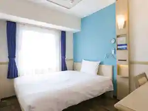
アパホテル〈山口岩国駅前西〉2026年6月プレオープン
Apahoteru < Yamaguchi Iwakuni Ekimae Nishi > 2026 Nen 6 Gatsu Pureoopun
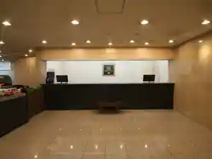
グリーンリッチホテル岩国駅前（人工温泉 二股湯の華）
Guriinritchihoteru Iwakuni Ekimae ( Jinkou Onsen Futamata Yu No Hana )
シティホテル安藤
Shiteihoteru Andou
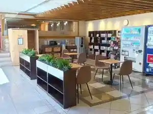
ホテル・アルファ－ワン岩国
Hoteru・Arufa - Wan Iwakuni
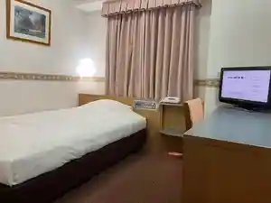
岩国シティビューホテル
Iwakuni Shiteibyuuhoteru
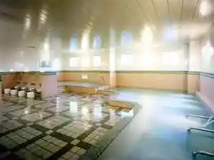
ＨＯＴＥＬ Ｒ９ Ｔｈｅ Ｙａｒｄ 岩国
H O T E L R 9 T H E Y A R D Iwakuni
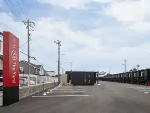
なかや旅館
Nakaya Ryokan
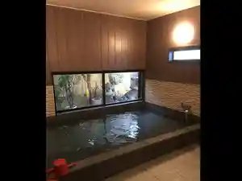
HOTEL AZ 山口岩国店
Hotel Az Yamaguchi Iwakuni Mise
元祖岩国寿司の宿 三原家
Ganso Iwakuni Sushi No Yado Mihara Ie
半月庵
Hantsuki Iori
【錦帯橋温泉 岩国国際観光ホテル】～錦帯橋を望む絶景温泉～
( Kintai Hashi Onsen Iwakuni Kokusai Kankou Hoteru ) ~ Kintai Hashi Wo Nozomu Zekkei Onsen ~
末岡旅館
Sueoka Ryokan
割烹旅館 白為旅館
Kappou Ryokan Shiro Tame Ryokan
HOTEL R9 The Yard 岩国玖珂インター
Hotel R9 The Yard Iwakuni Kuga Intaa
森のホテル GEKKA
Mori No Hoteru Gekka